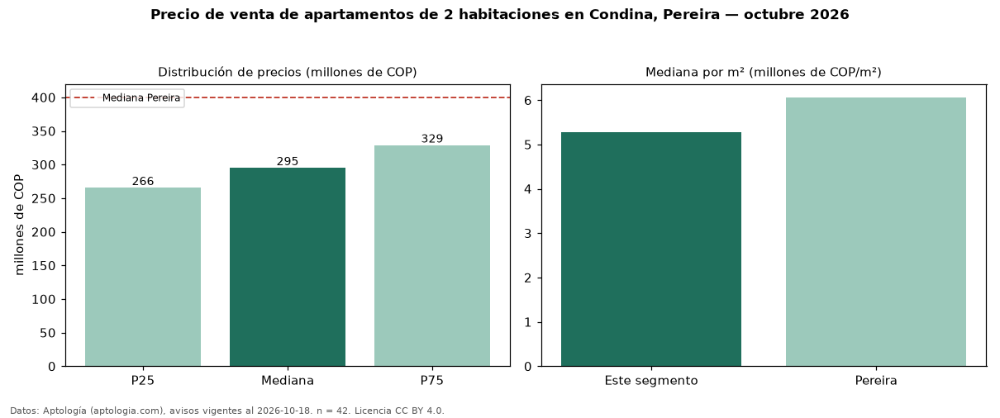

Precio de venta de apartamentos de 2 habitaciones en Condina, Pereira — octubre 2026
COP 295 millones es el precio mediano de apartamentos de 2 habitaciones en venta en Condina, Pereira (n = 42 avisos). Eso es 26 % por debajo de la mediana de Pereira para apartamentos de 2 habitaciones (COP 400 millones). Por metro cuadrado, la mediana es COP 5,27 millones/m² (n = 41 avisos con área), 13 % por debajo de Pereira (COP 6,06 millones/m²). Son 23 % de los 179 avisos de apartamentos en venta de la zona, cuya mediana general es COP 280 millones (+5 %). El área mediana anunciada es 56 m². La administración mediana declarada es COP 210.000 al mes (n = 27). El estrato más frecuente es 4 (62 % de los avisos con estrato). La mitad central de los avisos va de COP 266 millones a COP 329 millones (razón 1,2), una dispersión baja. Datos: Aptología (aptologia.com), CC BY 4.0 — https://www.aptologia.com/venta/pereira/condina. Archivos: PDF, CSV con las cifras y gráfica PNG.

| Avisos únicos | 42 |
|---|---|
| Percentil 25 | COP 265.500.000 |
| Mediana | COP 295.000.000 |
| Percentil 75 | COP 328.750.000 |
| Mediana por m² | COP 5.267.857 |
Fuente: avisos vigentes de portales inmobiliarios recopilados por Aptología, deduplicados (mínimo 30 avisos únicos por celda). Precios pedidos, no cerrados. Fecha: 2026-10-18.